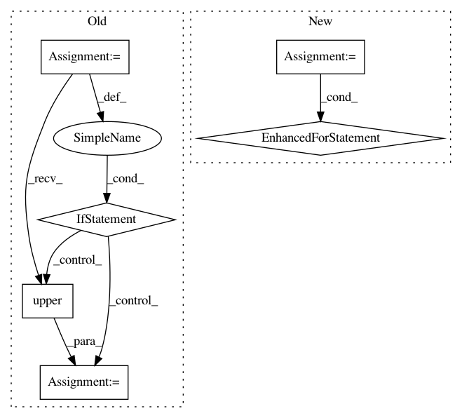

f967bd87424bbc50f475d5959994a5743ae2af0e,src/pudl/convert/epacems_to_parquet.py,,epacems_to_parquet,#Any#Any#Any#Any#Any#Any#Any#,168
Before Change
out_dir = pudl.load.metadata.prep_directory(out_dir, clobber=clobber)
in_types = create_in_dtypes()
schema = create_cems_schema()
data_path = pathlib.Path(datapkg_dir, "data")
// double check that all of the years you are asking for are actually in
_verify_cems_args(data_path, epacems_years, epacems_states)
for file in data_path.iterdir():
if "epacems" in file.name:
df_name = file.name[:file.name.find(".")]
year = int(df_name[25:29])
state = df_name[30:].upper()
// only convert the years and states that you actually want
if year in epacems_years and state in epacems_states:
df = pd.read_csv(
file, dtype=in_types, parse_dates=["operating_datetime_utc"]
).assign(year=year)
logger.info(
f"Converted {len(df)} records for {year} and {state}."
)
pq.write_to_dataset(
pa.Table.from_pandas(
df, preserve_index=False, schema=schema),
root_path=str(out_dir), partition_cols=list(partition_cols),
compression=compression)
def parse_command_line(argv):
Parse command line arguments. See the -h option.
After Change
// paths pertaining to the CEMS years/states of interest.
in_types = create_in_dtypes()
schema = create_cems_schema()
for year in epacems_years:
for state in epacems_states:
newpath = pathlib.Path(
data_dir,
f"hourly_emissions_epacems_{year}_{state.lower()}.csv.gz")
df = (
pd.read_csv(newpath, dtype=in_types,
parse_dates=["operating_datetime_utc"])
.assign(year=year)
)
logger.info(f"{year}-{state}: {len(df)} records")
pq.write_to_dataset(
pa.Table.from_pandas(
df, preserve_index=False, schema=schema),
root_path=str(out_dir), partition_cols=list(partition_cols),
compression=compression)
def parse_command_line(argv):
Parse command line arguments. See the -h option.
In pattern: SUPERPATTERN
Frequency: 3
Non-data size: 6
Instances
Project Name: catalyst-cooperative/pudl
Commit Name: f967bd87424bbc50f475d5959994a5743ae2af0e
Time: 2019-12-28
Author: zane.selvans@catalyst.coop
File Name: src/pudl/convert/epacems_to_parquet.py
Class Name:
Method Name: epacems_to_parquet
Project Name: home-assistant/home-assistant
Commit Name: db23320659a711637b5164fbe6ae6db15cc48e48
Time: 2016-07-06
Author: dale3h@gmail.com
File Name: homeassistant/components/sensor/apcupsd.py
Class Name:
Method Name: setup_platform
Project Name: stanfordnlp/stanza
Commit Name: f25d9afd2572b98c56c3f597ad8da2648cd7b663
Time: 2020-12-01
Author: horatio@gmail.com
File Name: stanza/utils/training/common.py
Class Name:
Method Name: main